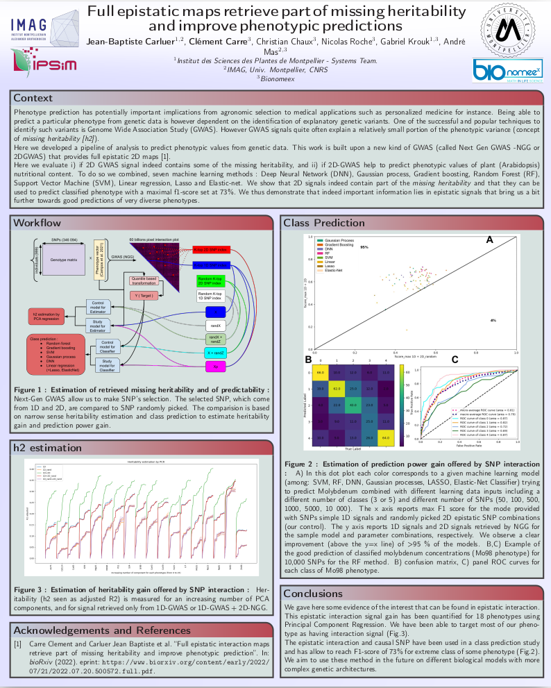

Ingeneer in Bioinformatics
Montpellier, FR
carluer.jean.baptiste@gmail.com
+33 679056732
Skills
Computer Science
Artificial Intelligence
Modelisation
Data Science
Cellular biology
Genetics
Languages
English
Spanish
CNRS - Agropolis Fondation - SATT AXLR
C++ CUDA PYQT5 GWAS Big data management
École de technologie supérieure - ÉTS
C++ Internship Python GPU Computer Vision
Protein function and engineering unit - UFIP
Django Internship Python Gestion big data
CNP Technologie de l'information
Société Horvais
PhD Degree : "Artificial Intelligence to Predict Plant network and Phenotype"
Master Degree : "Bioinformatique pour les biologistes"
Bachelor Degree : "Biologie Moléculaire et Cellulaire"
Poster - Full epistatic maps retrieve part of missing heritability and improve phenotypic predictions
Abstract - Phenotype prediction has potentially important implications from agronomic selection to medical applications such as personalized medicine for instance. Being able to predict a particular phenotype from genetic data is however dependent on the identification of explanatory genetic variants. One of the successful and popular techniques to identify such variants is Genome Wide Association Study (GWAS). However GWAS signals quite often explain a relatively small portion of the phenotypic variance (concept of missing heritability [h2]). Here we developed a pipeline of analysis to predict phenotypic values from genetic data. This work is built upon a new kind of GWAS (called Next Gen GWAS -NGG or 2DGWAS) that provides full epistatic 2D maps [1]. Here we evaluate i) if 2D GWAS signal indeed contains some of the missing heritability, and ii) if 2D-GWAS help to predict phenotypic values of plant (Arabidopsis) nutritional content. To do so we combined, seven machine learning methods : Deep Neural Network (DNN), Gaussian process, Gradient boosting, Random Forest (RF), Support Vector Machine (SVM), Linear regression, Lasso and Elastic-net. We show that 2D signals indeed contain part of the missing heritability and that they can be used to predict classified phenotype with a maximal f1-score set at 73%. We thus demonstrate that indeed important information lies in epistatic signals that bring us a bit further towards good predictions of very diverse phenotypes.
Abstract - The first Genome Wide Association Studies (GWAS) shed light on the concept of missing heritability. It constitutes a mystery with transcending consequences from plant to human genetics. This mystery lies in the fact that a large proportion of phenotypes are not explained by unique or simple genomic modifications. One has to invoke genetic interactions among different loci, also known as epistasis, to partly account for it. However, current GWAS statistical models are moderately scalable, very sensitive to False Discovery Rate (FDR) corrections and, even combined with High Performance Computing (HPC), they can take years to evaluate for a full combinatorial epistatic space for a single phenotype. Here we propose a modeling approach, named Next-Gen GWAS (NGG) that evaluates, within hours, >60 billions of single nucleotide polymorphism (SNP) combinatorial first-order interactions, on a reasonable computer power. We first benchmark NGG on state of the art GWAS model results, and apply this to Arabidopsis thaliana providing 2D epistatic maps at gene resolution. We demonstrate on several phenotypes that a large proportion of the missing heritability can i) be retrieved with this modeling approach, ii) indeed lies in epistatic interactions and iii) can be used to improve phenotype prediction.
ReadAbstract - This work details a highly efficient implementation of the 3D scale-invariant feature transform (SIFT) algorithm, for the purpose of machine learning from large sets of volumetric medical image data. The primary operations of the 3D SIFT code are implemented on a graphics processing unit (GPU), including convolution, sub-sampling, and 4D peak detection from scale-space pyramids. The performance improvements are quantified in keypoint detection and image-to-image matching experiments, using 3D MRI human brain volumes of different people. Computationally efficient 3D keypoint descriptors are proposed based on the Binary Robust Independent Elementary Feature (BRIEF) code, including a novel descriptor we call Ranked Robust Independent Elementary Features (RRIEF), and compared to the original 3D SIFT-Rank method\citep{toews2013efficient}. The GPU implementation affords a speedup of approximately 7X beyond an optimised CPU implementation, where computation time is reduced from 1.4 seconds to 0.2 seconds for 3D volumes of size (145, 174, 145) voxels with approximately 3000 keypoints. Notable speedups include the convolution operation (20X), 4D peak detection (3X), sub-sampling (3X), and difference-of-Gaussian pyramid construction (2X). Efficient descriptors offer a speedup of 2X and a memory savings of 6X compared to standard SIFT-Rank descriptors, at a cost of reduced numbers of keypoint correspondences, revealing a trade-off between computational efficiency and algorithmic performance. The speedups gained by our implementation will allow for a more efficient analysis on larger data sets. Our optimized GPU implementation of the 3D SIFT-Rank extractor is available at https://github.com/CarluerJB/3D_SIFT_CUDA.
ReadAbstract - We propose a feature extraction method via a novel description and a scalable GPU implementation (the first to our knowledge) of the 3D scale-invariant feature transform (SIFT). The feature extraction is first represented as a shallow convolutional neural network with pre-computed filters, followed by a masked keypoint analysis. We use the implementation in order to investigate feature extraction for specific instance identification on natural non-skull-stripped magnetic resonance image (MRI) neuroimaging data. The proposed implementation is invariant to 3D similarity transforms and aims to improve robustness by reducing noise and bias for image processing convolution operations. We show interpretable feature visualizations, which help explain the obtained results. We demonstrate state-of-the-art results in large-scale neuroimage family indexing experiments on 3D data from the Human Connectome Project repository, and show significant speed gains compared to a CPU implementation. The results imply that using feature extraction using SIFT for neuroimaging analysis can lead to less noisy results without the need for hard masking during preprocessing. The resulting interpretable features can help understand brain similarities between family members, and can also be used on arbitrary image modalities and anatomical structures.
ReadAbstract - We propose a unified appearance model accounting for traditional shallow (i.e. 3D SIFT keypoints) and deep (i.e. CNN output layers) image feature representations, encoding respectively specific, localized neuroanatomical patterns and rich global information into a single indexing and classification framework. A novel Bayesian model combines shallow and deep features based on an assumption of conditional independence and validated by experiments indexing specific family members and general group categories in 3D MRI neuroimage data of 1010 subjects from the Human Connectome Project, including twins and non-twin siblings. A novel domain adaptation strategy is presented, transforming deep CNN vectors elements into binary class-informative descriptors. A GPU-based implementation of all processing is provided. State-of-the-art performance is achieved in large-scale neuroimage indexing, both in terms of computational complexity, accuracy in identifying family members and sex classification.
Read